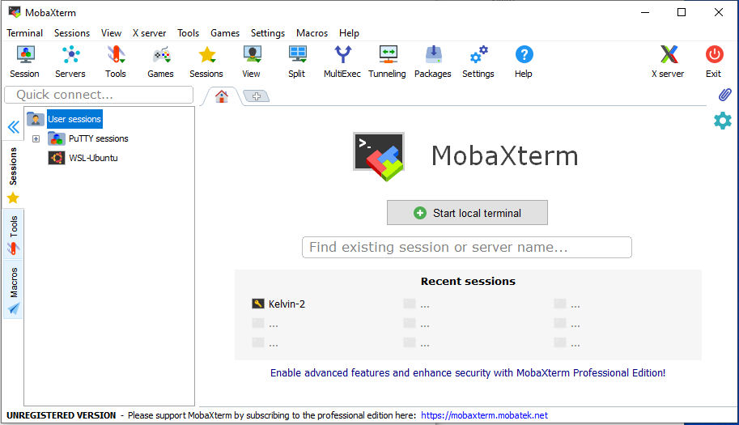
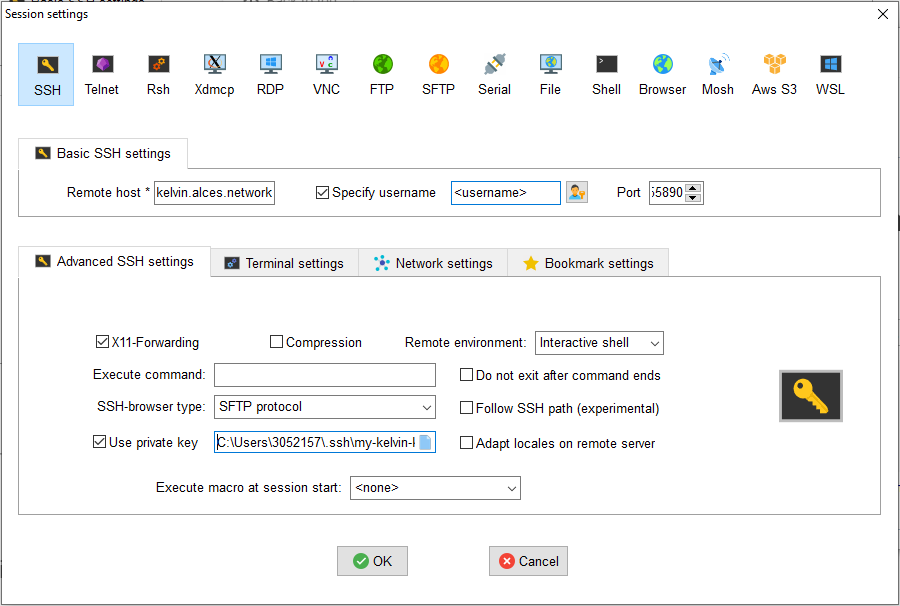
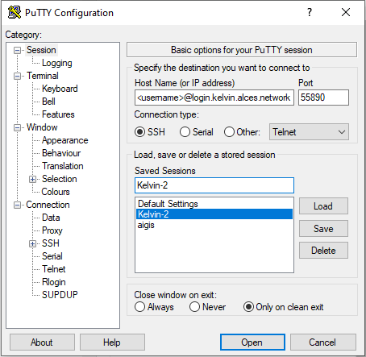
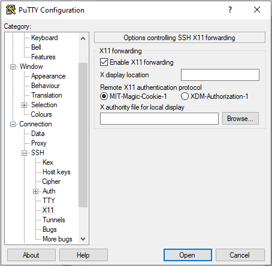

Getting started
Here we will detail the first steps on accessing our HPC cluster, Kelvin2.
Applying for an account
To gain an account to access Kelvin2, please fill the form found here :
https://www.ni-hpc.ac.uk/Access/
Please allow 48 hours for your account to be created.
Users will be emailed confirmation when their account has been processed.
Credentials
Username
- QUB - Username will be your student/staff number.
- UU & EPSRC - Username will be the first letter of your first name, followed by your surname in lowercase e.g Joe Bloggs -> jbloggs
Password
- QUB - Password will be that which is associated with QUB AD and QOL.
- UU & EPSRC - Password will be created when setting up remote access.
Connecting to Kelvin2
Connection to Kelvin2 is via ssh.
There are 2 ways to connect to Kelvin2:
1. QUB network
2. Remote access
QUB Network
If you are within a QUB network you can connect to kelvin2 using your credentials and the following ssh command :
ssh <username>@kelvin2.qub.ac.uk
Remote Access
Kelvin2 can be accessed from outside the QUB network by using SSH keys.
- Kelvin server name: login.kelvin.alces.network
- Port: 55890
Remote access from a Linux computer
- Open a terminal and create a public/private key pair on the remote machine:
ssh-keygen -t rsa –f ~/.ssh/my-kelvin-key
All users MUST set a password for the passphrase when prompted.
- Copy the public key generated to Kelvin2
The easiest way to do this is to place the contents of the public key file into the authorized users file in your Kelvin2 home directory.
cat ~/.ssh/my-kelvin-key.pub
Login to Kelvin2 and paste the above output into the end of the file:
~/.ssh/authorized_keys
Note: if you are away from the QUB campus and hence do not have access to Kelvin2, send the public key via a method found here, whereupon an administrator will add it for you.
- Login using SSH
ssh –p 55890 –i ~/.ssh/my-kelvin-key <username>@login.kelvin.alces.network
Remote access from a Windows computer
Two popular terminal emulators are putty and MobaXTerm. If using putty there is a tool called puttygen which will generate public/private keys.
- Open a terminal and create a public/private key pair on the remote machine:
ssh-keygen
Call your key my-kelvin-key.
All users MUST set a password for the passphrase when prompted.
- Copy the public key to Kelvin2.
The easiest way to do this is to place the contents of the public key file into the authorized users file in your Kelvin2 home directory.
type my-kelvin-key.pub
Login to Kelvin2 and paste the above output into the end of the file:
~/.ssh/authorized_keys
Note: if you are away from the QUB campus and hence do not have access to Kelvin2, send the public key via a method found here, whereupon an administrator will add it for you.
- Login using SSH
ssh –p 55890 –i ~/.ssh/my-kelvin-key <username>@login.kelvin.alces.network
SSH clients
For Windows users, the recommended way to connect to Kelvin-2 is via a ssh client. The two most popular options are MobaXTerm and PuTTy.
MobaXTerm
MobaXTerm is the recommended ssh client. It can be downloaded from the web
https://mobaxterm.mobatek.net
To configure the remote session, firstly download and install MobaXTerm. Then, open it and follow the steps:
-
On the initial screen, click on "Sessions".

-
On the "Sessions" screen, click on "SSH".

-
On the "SSH" screen, fill the following fields:
- Remote host:
kelvin2.qub.ac.ukfrom inside the QUB campus, orlogin.kelvin.alces.networkfrom outside the QUB campus. - Tick "Specify username", and fill the box with your Kelvin-2 username.
- Port:
22from inside the QUB campus, or55890from outside the QUB campus.
Click on "Advanced SSH Settings"

- Remote host:
-
On the "Advanced SSH Settings" screen, fill the following fields:
- Tick "X11-Forwarding". This will allow to open graphical applications.
- Only if you are connecting from ouside the QUB campus, tick "Use private key". Then click on the "paper sheet" icon on the right of the box, and select your private key file
my-kelvin-key. - Click the "OK" box on the bottom of the Window.
The session will be stored for future use, and it will appear on the left part of the initial MobaXTerm window, under the tab "Sessions". To connect again, just click on the session.

PuTTy
PuTTy can be installed from the Microsoft store, or downloaded from the web : https://www.putty.org
To use PuTTy as a remote ssh client, the configuration is similar to MobaXTerm. To begin, you will need to configure a session:
If you are connecting from outside the QUB campus, you must convert the private key my-kelvin-key to the PuTTy Private Key format .ppk. To do so, you need to open the component "PuTTygen", and follow the steps
-
Click on "Actions - Load an existing private key file - Load".

-
When the browse window opens, change the file format from "PuTTy Private Key Files (*.ppk)" to "All files (*.*)". Then, browse in your system and select your private-key file
my-kelvin-key. You will be asked for the passphrase.
Select "Save private key", and save it under the namemy-kelvin-key.ppk.
Now, you can configure your session in PuTTy, following the steps:
-
On the initial window, fill the fields:
- Host name (or IP address):
<username>@kelvin2.qub.ac.ukto connect from inside the QUB campus, or<username>@login.kelvin.alces.networkfrom outside the QUB campus. - Port:
22to connect from inside the QUB campus, or55890from outside the QUB campus. - Connection type: click on "SSH".
- Saved sessions: give a name to your session and click on "Save".

- Host name (or IP address):
-
Now click on the tab "Connection - SSH - X11". Tick on "Enable X11 forwarding", this will allow to open graphical applications.

-
Only if you are connecting from outside the QUB campus, click on the tab "Connection - SSH - Auth". At the bottom, go to the box "Private key file for authentication", and click on "Browse". Select your private-key file
my-kelvin-key.ppk.
-
Go back to the tab "Session" and save the created session, it will appear in the big box. To connect, select your session from the box, and click on "Open" at the bottom of the window.
Copying data to Kelvin2
To copy files across to kelvin use pscp or scp. Give the full path to the directory/file to be copied and connect using your credentials, like below:
Windows OS with putty installed
pscp –p 55890 "C:\Users\MyPC\Documents\test.txt" -i my_kelvin_key <username>@login.kelvin.alces.network
Linux OS:
Attention that the -P flag to specify the ssh port must be in capital
scp –P 55890 -i ~/.ssh/my_kelvin_key ~/test.txt <username>@login.kelvin.alces.network:~
Windows scp clients
In Windows machines, MobaXTerm and WinSCP can be used to transfer files from and to Kelvin-2 in a graphical easy way. Already saved sessions of MobaXTerm or PuTTy can be used.
-
MobaXTerm:
https://mobaxterm.mobatek.net -
WinSCP:
https://winscp.net/eng/index.php